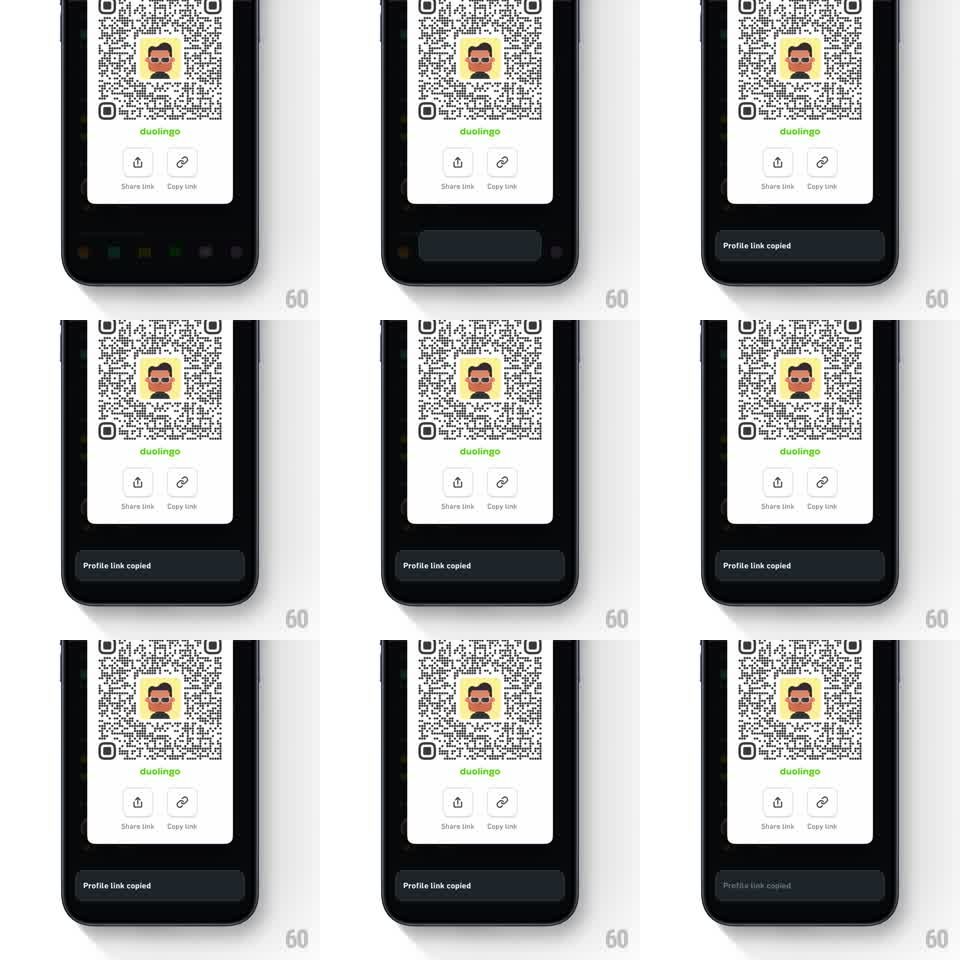

Media
Frame-by-frame

Rebuild this interaction 1:1: Duolingo's copy-link toast - tapping Copy link slides a dark toast up from the bottom with a springy overshoot, where it hangs before sliding back away.

Rebuild this interaction 1:1: Duolingo's copy-link toast - tapping Copy link slides a dark toast up from the bottom with a springy overshoot, where it hangs before sliding back away.
## Integration
Integration: stack-agnostic spec - springs given as stiffness/damping, timed motions as duration + curve; map every value to your framework and animation library of choice.
## Scene
Duolingo profile QR screen, near-black: a white QR card with the avatar centered and "duolingo" below it, two round icon buttons ("Share link", "Copy link") beneath. The toast: a dark charcoal rounded bar reading "Profile link copied" that lives above the bottom edge.
## Motion spec
Pattern: springy bottom toast with overshoot.
- Tap Copy link: the button scales 1 -> 0.92 -> 1 (150ms) as confirmation haptic fires.
- The toast enters from below: translateY 120% -> 0 with spring ~300/15 - one clear overshoot (~8px past rest) then settle, total ~450ms.
- It holds for 2.2s fully opaque, then exits sliding down with the same spring reversed (no fade - position only).
- A second copy during the hold resets the timer and re-pops the toast 4px up and back (150ms) instead of restarting the entrance.
## Calibration
- Toast is charcoal on the near-black screen - separated by a hairline lighter border, not shadow.
- Rounded corners ~14px; text left-aligned with generous leading padding.
## Reduced motion
Toast fades in/out (200ms) at its rest position.
## Don't miss
- The overshoot is the personality - a single bounce, not a wobble.
- The QR card and buttons never move; only the toast animates.